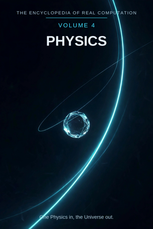

Chron.
The Encyclopedia of Real Computation

One Physics in, the Universe out.
Home domain: Physics
One Physics in, the Universe out.
◉ A Principle .... Physics ◎ B Purpose ...... Explanation ◉·◉ A.A Alpha ...... the Physicist ◉·◎ A.B Cross ...... the Experiment △ X Primitive .... Matter ⚙ Y Protocol ..... Measurement ⬢ Z Product ...... the Law ◐ i State ........ the Anomaly ⚖ j Condition .... the Conditions ⊞ N Set .......... the Branches ◷ h Time ......... the Instant ▣ C Context ...... the Laboratory ▦ D Domain ....... the Field ♥ E Emotion ...... Awe ➤ F Intention .... Prediction ↻ pi Cycle ........ the Orbit ➔ phi Step ......... the Event ⚄ e Probability .. the Odds • h-bar Planck ..... the Quantum
Σ sigma Summation .. the Theory
◈ gamma Scale ...... the Scale Δ delta Change ..... Entropy ⁂ sigma' Options ... the Models Ω Omega Answer ..... the Universe
Every volume of this encyclopedia does the same work. The Prologue figures the subject whole. Then come twenty-four chapters, one per term, each doing four jobs in plain English: what the term means, where it sits in the computation, how it works on the volume's one running example, and what breaks without it. Then the Data, whole. Then the Crossings. Then the Sum. The running example of this volume is a falling stone, timed: one rock, dropped from one height, with a clock running - the smallest experiment there is, and the seed of the whole field.
Physics: the study of matter and motion - of what the world is made of and how it behaves. Explanation: an account that does not merely describe what happens but shows why it must happen so, and what would happen otherwise.
◉ Physics. ◎ Explanation = the root of Physics: aimed at itself,
physics asks why the world behaves as it does. ◉·◉ the Physicist: physics turned on itself becomes a person who measures. ◉·◎ the Experiment: physics crossed with explanation - the test that carries the crossing. △ Matter = Physics parted over the Branches. ⚙ Measurement = the function of Matter, the working applied. ⬢ the Law = Matter times Measurement, the product, once the Experiment has carried it to Explanation.
◐ the Anomaly = the root of negative Physics: what the standing
law cannot account for. ⚖ the Conditions = the condition, element by element: physics stands while its stated conditions hold. ⊞ the Branches = the set: Mechanics, Optics, Heat, Electromagnetism, Relativity, the Quantum. ◷ the Instant: physics comes down through time one moment at a time. ▣ the Laboratory: where physics stands. ▦ the Field = the Branches crossed by the Study. ♥ Awe = the difference a landing makes.
➤ Prediction = the intention that carries a context. ↻ the
Orbit: physics returns to its old ground each revolution.
➔ the Event: one happening, placed, stood on. ⚄ the Odds: the
chances a result carries - measurement sets them honestly.
• the Quantum: the least piece, the smallest packet there is.
Σ the Theory: all of physics, summed as one. ◈ the Scale: the size at which a law is read. Δ Entropy: physics' own measure of change. ⁂ the Models: the spread of what is proposed but not yet settled. Ω the Universe: the answer physics resolves into.
IF If Physics to Explanation, then Matter & Measurement is the Law, or the Anomaly while the Conditions for the Branches, through the Instant, in the Laboratory, the Field, Awe, Prediction, at the Orbit by the Event, with the Odds over the Quantum - sum the Theory, scale the Scale, change Entropy, options the Models - therefore the Universe.
Stands below, after the chapters, figured whole: the Branches crossed by the Study, twenty-four cells, and the six contexts.
The seven laws, run on this seed. Pythagoras: Physics squared plus Explanation squared overlays the Laboratory squared - the triangle checks in the Where, the If, and the Data identically; the falling stone's law was first read off just such a triangle of distance and time. Law of cosines: the tilt between physics and explanation is set by context - on the bench the angle is steep and clean, in the field it flattens with weather and wear. Binomial: the middle term is the Experiment, two times over - matter shapes the measurement, the measurement reshapes what counts as explained. AM-GM: Explanation is the geometric mean between Physics and the One. Log law: the Scale of the Law is the Scale of the Matter plus the Scale of the Measurement - size adds where work multiplies. Complex modulus: the Anomaly is counted in the size of the theory; physics is larger, not smaller, for keeping the results it cannot yet explain. Triangle inequality: no route from Matter to Law is shorter than Measurement; skip it and you hold a model, labelled as such in the last term but one.
Physics begins with the plainest objects there are - stones, light, heat - and works them by one disciplined working: measurement, numbers taken from the world under stated conditions. Its product is not the working but the law: a behaviour stated so exactly that it can be used by people who never saw the experiment, on objects that have never fallen before. The discipline is honest about its edges: it keeps its anomalies in the open, filed and dated, because an anomaly kept is a door and an anomaly hidden is a rot. It prints its conditions with its laws the way mathematics prints its axioms. Its history orbits: each generation returns to the falling bodies with better clocks, and each return re-founds the field one level deeper. And its finish is the widest of any volume in this encyclopedia - the Universe itself: not a description of this stone or that star, but the one running whole in which both fall by the same law. One Physics in, the Universe out.
What it means. Physics is the study of matter and its motion: what the world is made of, and the rules its behaviour keeps. It is the most fundamental of the sciences - chemistry stands on it, astronomy is it at distance - and the most audacious: it claims the same law for the stone and the star.
Where it sits. Physics is the Principle of this volume, the seed every other term grows from: Explanation is its root, the Physicist its self-product, the Experiment its cross.
How it works. Drop a stone from a bridge and time the fall. Everything in this volume is physics answering one question about that drop completely - how fast, by what rule, in what time - and discovering, on the way, that the answer for this stone is the answer for the Moon.
What breaks without it. Every neighbouring volume borrows physics' machinery: chemistry's bonds are its forces, earth science's drift is its motion, the crafts' joints its loads. Remove the Principle and the borrowing fields keep their objects and lose their behaviours.
What it means. An explanation is an account that shows why a thing must happen so - not a story about it, not a description of it, but the mechanism laid bare, with its conditions, so that what would happen otherwise is also visible. Explanation is what physics is for: the difference between physics and a catalogue of happenings is nothing else.
Where it sits. Explanation is the Purpose, B = the square root of A: physics aimed at itself extracts the demand to say why, not just what. And B squared = A: a happening fully explained settles back into physics itself.
How it works. The stone falls in about one second from five metres - that is description. It falls because the Earth draws all matter toward itself, at a rate that grows the speed by the same amount each second - that is explanation, and it predicts the next stone, and the next height, before either is dropped.
What breaks without it. Without explanation, physics is almanac: tables of what happened, usually right about the past, silent about the next case.
What it means. The physicist is physics embodied: a person in whom the field's standards have become reflexes - what counts as measured, what smells like a loose wire, where the error bars are hiding.
Where it sits. The Alpha, A times A: the field turned on itself. The same falling stone timed by a novice and by a physicist differs the way a fact differs in any field - in the company it keeps: air resistance allowed for, the clock's lag suspected, three other drops already planned.
How it works. Hand the stone to a beginner and he drops it and announces a time. Hand it to a physicist and she asks what the time leaves out - the asking, not the dropping, is where the law of fall lives. The holder is the difference.
What breaks without it. Unowned physics is a shelf of instruments nobody can interrogate: laws without a knower are a coastline with no one sailing from it.
What it means. The experiment is the interaction term: physics crossed with explanation, a question put to matter in the form of an arrangement - the drop arranged, the clock started, the conditions recorded. It is where the work happens, the middle term of the binomial, carrying force in both directions.
Where it sits. The Cross, A times B, counted twice: the question shapes the experiment (you arrange differently for different quarry), and the experiment reshapes the question (half of all explanations die at the bench, improved).
How it works. The stone's drop is an experiment the moment it is timed under stated conditions: the Earth "asked" how fast it draws, and the fall is the answer, in metres and seconds. Trying to show the fall is steady teaches you exactly why it is not - it accelerates. The failed guess is part of the map now.
What breaks without it. With either factor at zero - matter with no question put to it, or questions with no matter to ask - the product is zero and the world keeps its secrets by default.
What it means. Matter is the primitive material: the stuff itself - mass, charge, stuff that can be weighed, deflected, heated, dropped. Matter makes no claim by itself; it is the clay. Physics parted over its branches arrives first as matter - stones in mechanics, light in optics, currents in electromagnetism.
Where it sits. X = A times N: the Principle spread across the Set. Every branch receives the principle as its own matter - the pendulum's bob, the prism's beam, the gas in the cylinder.
How it works. The example begins as one piece of matter: a stone, mass in the hand, indifferent to being famous. Nothing has been claimed yet except that it is matter, it is here, and it will fall when let go. The fall is the volume; the clay is this.
What breaks without it. No primitives, no products: a field with nothing elementary to work has only conclusions, and conclusions cannot be checked from inside themselves.
What it means. Measurement is what may be done to matter: weigh, time, mark the length, read the dial - with instruments checked against standards and the result printed with its uncertainty. The list of procedures is public, and the same for everyone, which is the whole point. A protocol that varies by person is not a protocol.
Where it sits. Y = f(X), with f the root of Explanation: the working is governed by the purpose - measurements are chosen because they carry toward explaining, not merely toward numbering.
How it works. Time the stone over a measured height, again, again. The times cluster; the average steadies; the squares of the times stand in proportion to the heights, and there, inside repeated timing, is the law of fall assembling itself. The working ran ahead of the law, as good protocol should.
What breaks without it. Matter without a working sits inert: a world full of stuff nobody may interrogate. Measurement is the field's hands.
What it means. A law is a behaviour that has been measured into settled form: matter worked by measurement and carried across an experiment, arriving as something the whole field may now stand on - and strangers may use on things that have never been dropped, fired, or heated before. Laws are physics' load-bearing walls.
Where it sits. Z = X times Y: the product, area-shaped - it reaches exactly as far as its factors reach, and it can always be factored back for audit: which matter, which measurements, under which conditions.
How it works. The stone yields the field's first great product: falling bodies gain speed evenly, and the distance grows with the square of the time. Drop the stone on the Moon and the same law holds at a gentler rate. The product did not just describe a fall; it annexed every fall there will ever be.
What breaks without it. Working that never sets into product is exercise, not physics. The law is where effort becomes inheritance.
What it means. The anomaly is physics' shadow: the measured result the standing law cannot account for - the orbit that precesses a hair too far, the particle that arrives when none should. It is not noise and it is not failure; it is the field's discovery, in waiting, of its own next edition.
Where it sits. i = the root of negative A: the state of the principle itself, counted in the theory's size by the modulus law. The shadow is not outside physics; its most famous anomalies became its most famous laws.
How it works. Time the stone with a better clock and the times sit a shade off the law - air, unallowed-for, dragging at the fall. That is the friendly face of this chapter. The deep face: an anomaly at Mercury's orbit, patiently recorded for decades, stood unreconciled until the theory of gravity itself was replaced. The small discrepancy is the same lesson at bench scale: measured is not the same as explained.
What breaks without it. A physics that hid its anomalies would be lying about its own reach - and the lie would be found, from outside, at the worst moment. Naming the shadow is what lets the field trust its light.
What it means. The conditions are the stated circumstances a law stands under: in vacuum, at sea level, friction neglected, speeds well below light's. Physics does not hide them. It prints them with the law, because every law is "under these conditions, this" - and honesty about the "under" is the condition of the whole.
Where it sits. j, the Condition: the root taken element by element. Each result stands while its conditions stand; change the conditions - pull the air out of the tube - and a feather falls beside the stone like its brother. Verification here is granular: this drop, these conditions.
How it works. The stone's times are quoted with their conditions the way a house stands on its footings - invisibly, until you ask. Asked, the physicist can name them all: height, clock, air, place. That nameability is the condition working.
What breaks without it. Unstated conditions are smuggled exceptions. The field that prints its conditions can be argued with; the field that hides them can only be obeyed or abandoned.
What it means. The branches are physics' divisions: Mechanics (motion), Optics (light), Heat (energy's wanderings), Electromagnetism (charge and field), Relativity (frames and the invariant), the Quantum (the least pieces and their odds). Each branch is the whole principle read in one direction.
Where it sits. N, the Set - the term everything is counted in: matter is A times N, the domain is N crossed by the Study, the sum runs over N. The set is complete as this volume defines it and open underneath; branches have merged before (heat into mechanics' energy, electricity into magnetism) and may merge again.
How it works. The stone's short fall lives in Mechanics - but time it with a light-clock and Optics enters; drop it hot and Heat joins; drop it far and Relativity must be consulted about whose clock was right. One fall, a tour of the set - the set is a sorting, not a fence.
What breaks without it. Unsorted physics is a heap of results: all measured, none findable, each generation re-timing what it cannot locate.
What it means. The instant is physics' unit of time: the knife-edge moment at which a speed, a position, a state is read. Physics comes down through the instant - a fall is a parade of instants, and the law is what the parade obeys. The field's deepest fights have been over this term: whether the instant can be subdivided forever, and by whose clock it is kept.
Where it sits. h, Time: the passage the whole figure moves through. Physics' time is unusually honest about direction: processes run one way (the next-to-last chapter owns the reason), and every measurement in this volume is a reading taken while passing.
How it works. The stone's fall is three seconds of instants, each with its own speed, all different, all lawful. The clock does not watch the fall; the clock samples it - and the law is the pattern the samples spell when they are laid in a row.
What breaks without it. Physics without its instant is geometry: shapes of paths with nothing moving along them, positions with no befores or afters - a world described perfectly and never once happening.
What it means. The laboratory is where physics stands: its base context, the controlled standing-place from which its domain is read. A laboratory is a piece of the world with the world's noise turned down - conditions held, draughts excluded - so that one behaviour at a time can be heard.
Where it sits. C, the Context, first of the setting terms: contexts transform the domain (the table stands in the Data), and the difference a context makes is measured by Awe, the next part's first term.
How it works. The stone in the laboratory falls down a wired shaft, past light-gates, onto a plate that rings the clock. The same stone off a bridge is the same law in weather. The number never changed; its company did - and the laboratory is the company arranged for listening.
What breaks without it. Context-free physics can be done - a little of it, in field notes and luck. The field as a human enterprise stands in the laboratory or nowhere.
What it means. The field is physics' whole territory: the branches crossed by the study - every branch in its four movements, from the question it asks to the teaching it hands on. (The word does double duty in physics, naming both this domain and the invisible reaches - of gravity, of magnetism - that fill space; the volume keeps both, since the second is one reason the first coheres.) The full table stands in the Data, twenty-four cells, every one figured.
Where it sits. D = N crossed by R: the set by the study. A branch becomes territory only when the study moves across it; the domain is a crossing, never a list.
How it works. Read the stone's path through the table: it is asked in Mechanics (the Motion), settled as the Acceleration, understood as the Force, and handed on in the Inclined Plane every beginner still rolls balls down. The territory is one land; the example has walked its roads.
What breaks without it. Branches without a domain are six solitudes, each re-deriving the others' results in private notation. The domain is the peace treaty and the road map in one.
What it means. Awe is the difference a result makes when it lands, measured the physicist's way: the moment the timed stone and the turning Moon become one behaviour, and the room gets larger. Physicists trust awe as a signal and distrust it as an argument, and they are right both times often enough that the signal is in the model.
Where it sits. E, Emotion: the difference between contexts, C1 minus C0. Before the measurement, the fall is a thing stones do; after it, the fall is a law the heavens also keep - and the size of the change is this term.
How it works. A student times the stone and notes the number. Then someone says: the Moon is falling like this, forever, sideways - and the bench-scale number she just wrote turns, without changing, into astronomy. That widening is awe, felt, and it is why the example has been dropped by beginners for four centuries.
What breaks without it. Two laws can be equally true and humanly unequal: the flat one is used, the awesome one is taught, remembered, and built on. A field that cannot feel the difference keeps both and slowly teaches neither.
What it means. Prediction is physics' intention: the deliberate act of saying, in advance, what the law requires the world to do next - and standing behind the saying. A prediction is a law with its neck out. It is the most exposed move in this volume and the one that makes all the others testable.
Where it sits. F, Intention: the operator that carries contexts - C1 = C0 + F. Apply prediction and the same domain becomes the engineer's design, the astronomer's almanac, the engine that has not been built yet, checked on paper first. What survives the carrying is the law; what is shed is the original bench it was found on.
How it works. The stone's law, once settled, predicts: this height, this time, before the drop. Drop it, and the clock grades the prediction in public. Multiply that grading by every bridge, circuit, and orbit ever computed and you have the volume's whole inheritance: laws that arrive before the events they govern.
What breaks without it. Unpredicting physics dies with each experiment: a thousand results, each welded to its own bench, none transferable. Prediction is why one volume can serve all the others.
What it means. Physics does not proceed in a line; it orbits. The pendulum returns, the planet returns, the field itself returns - to the falling body, to the prism, to the atom - each return with better instruments and deeper questions. The cycle is the field's gait: recurrence with a difference.
Where it sits. pi, the Cycle: the loop the figure runs, turning by steps. The orbit is also the field's memory policy - nothing is only measured once; it is re-met at every level, and the re-meeting is where technique deepens into understanding.
How it works. The stone's fall has been re-met by every age: tower, inclined plane, wired shaft, vacuum tube, the drop-towers of modern laboratories where the fall lasts whole seconds. Four centuries of returns to one drop of matter - and each return found the law both confirmed and, at the edges, stranger than the last age left it.
What breaks without it. A linear physics would measure each thing once, at one precision, and the precisions would never audit each other. The orbit is the agreement machinery.
What it means. An event is one happening, placed in space and time and stood on: the stone leaves the hand, the stone passes the mark, the stone strikes the plate. Physics advances by events the way knowledge advances by lessons - the step is a property of the advancing, not of the world.
Where it sits. phi, the Step: the advance at the cycle's turn. In the grammar, the cycle turns by the step - at the Orbit by the Event. Too coarse and the fall is a blur of two thuds; too fine and the record drowns in timestamps. The right event- spacing is what timing means.
How it works. The example is nearly all step: release, mark, strike - three events, and everything the law needs is hung on them. Add a fourth mark halfway and the acceleration itself becomes visible inside one fall. Longer experiments are this same stride repeated, each event placed by the design behind it.
What breaks without it. Falls recorded as single blurs would be believed or disbelieved whole, like stories. Events are how an experiment stays checkable by strangers.
What it means. The odds are the chances a result carries, and physics grades them in the open: the law of fall carries odds set by ten thousand repetitions; a single timed drop carries the odds of its clock and its draughts; a claimed new particle carries odds the field prints to several nines before it believes. Modern physics, at its smallest scale, does not even offer more than odds - the universe, read finely, deals in them.
Where it sits. e, Probability: with the Odds over the Quantum - every point of the field carries its chances printed beside it. Measurement is the machine that sets this term; the Models of Chapter 23 are the claims whose settings are still honestly low.
How it works. Time the stone a hundred times and the readings spread in the familiar bell - the law is the centre the bell keeps, the odds are its width, and the field reports both. The stone falls certainly; any one time for it is a citizen of the spread. That two-level honesty is the term at work.
What breaks without it. Without printed odds, a field cannot distinguish its bedrock from its hopes, and builds on both with the same confidence until the hopes settle the account.
What it means. The quantum is the least piece of physics: the smallest packet in which energy is ever dealt, found at the floor of measurement in the last century and named by the constant this term carries. Below the quantum there is no smaller dealing - nature, at the bottom, is granular.
Where it sits. h-bar, the Planck term: the smallest resolution of the figure. The Sum of this volume is taken at the quantum's grain - Omega's limit as the least piece shrinks: physics' total is defined over packets, and counts of packets, all the way down.
How it works. The stone is a mountain of quanta behaving, for once, as simply as a stone. Its fall can be timed with a wristwatch because the grain is so far below the bench scale. But the term is patient: focus the same attention on one atom and the grain is the whole story - the least piece turns out to govern the smallest rooms of the Universe outright.
What breaks without it. No least piece, no floor: measurement without a bottom, energies divisible in the mind past the point where nature stopped dividing them - a smooth fiction laid over a granular world.
What it means. The theory is physics summed: all the branches, all the laws, read as one body with one standard. A law anywhere must cohere everywhere; a contradiction in a corner is a fire in the whole house. That total accountability is what the summation operates - and the summed bodies carry the field's proudest names: mechanics entire, the field equations entire, each a sigma that swallowed a branch.
Where it sits. sigma, Summation: the total taken over the Set, whole, every branch, none sampled. It is the inverse of the parting that made Matter - the field breathes out into results and in into one theory.
How it works. The stone's law belongs to the theory, not to the bench that timed it: optics' clocks checked it, relativity bounded it, and a contradiction anywhere in that chain would be everyone's emergency by morning. The sum is a discipline before it is a number.
What breaks without it. Unsummed physics is a federation of notations drifting apart - the historical state the modern theory was built, painfully, to end.
What it means. The scale is the size at which a law is read: how large a stage its behaviour governs. Some laws settle a bench; a handful govern galaxies. The scale term also carries physics' hardest-won lesson: laws have ranges. The fall-law that times the stone fails, politely and exactly, near light's speed and inside the atom - not wrong, but read at the wrong magnification.
Where it sits. gamma, Scale: the translator of the figure. By the log law, the scale of a product is the sum of the scales - the law's reach equals the reach of its matter plus the reach of its measurement, which is why careful timing of a plain stone gives results out of proportion to both.
How it works. One stone, one clock - and the law extracted reaches the Moon's orbit and the tides. Scale of the apparatus: a bench. Scale of the result: the Earth-Moon system, and every fall inside it. The disproportion is the term at work, and the field's oldest magic trick.
What breaks without it. Read at one magnification, the field cannot tell its pebbles from its mountain ranges, and sends its students to polish both with equal reverence.
What it means. Entropy is physics' own measure of change: the count of a system's disorder, which in every closed happening rises or holds and never falls. It earns its place as this volume's delta twice over - it is the field's change-operator, and it is the one law in physics that gives time its arrow: the past is the direction of lower entropy, and no other law can tell you which way that is.
Where it sits. delta, Change: applied in the closing run after the sum and the scale are known - change read in full view of the whole. In the field itself, delta is revision too: the fall law was revised, not repealed, when the air's drag was let into the account - the stone's law grew a condition, and grew truer.
How it works. The stone falls, strikes, and stops. Its tidy store of height-energy is now warm plate, scattered sound, disturbed air - order spent into the room, unrecoverable by any device in the volume. Nothing in the fall's timing announced this; entropy is the ledger underneath the mechanics, and every event the stone passed wrote in it.
What breaks without it. A physics without its change-term describes a reversible world: falls that could un-fall, films that run either way - and lends nothing to the volumes that study a world where they cannot.
What it means. The models are physics' open spread: accounts proposed, partly fitted, not yet settled - which theory of gravity's fine print, which insides for the atom, what the dark portions of the sky are made of. They are printed in this volume as options, not results: the spread of what the field may do next.
Where it sits. sigma-prime, the Options: last before the Answer, by the book's discipline. No answer in this encyclopedia is read until its spread has been shown; a law printed without its neighbouring models looks more final than the field is.
How it works. The falling stone has worn a shelf of models: falls driven by nature seeking its place, falls by impetus, falls by universal attraction, falls by curved spacetime - each fitting the bench better, the last annexing Mercury's anomaly on its way. The stone kept falling through all of them; the spread is the history of its explanations, still open at the fine end.
What breaks without it. Hide the spread and the field presents itself as finished - a museum where a workshop should be. The models are physics' capital: the named shape of its next century.
What it means. The Universe is what physics resolves into: the whole running system, stone and star and quantum, in which every law of this volume is simultaneously true. It is the widest answer in the encyclopedia, and the most disciplined - physics means by it not everything imaginable, but everything there is, behaving.
Where it sits. Omega, the Answer: the limit of the whole figure, and its door back - the Universe shows the next model (Chapter 23 keeps them ready), the model roots the next physics. The volume closes where the field reopens.
How it works. The stone's truth is total and small: timed, lawful, done. From that one settled point, bridges are loaded, tides are foretold, moons are visited on schedule. A knower in this answer is not finished; she is equipped - including with a lit map of where the laws run out, at the very large and the very small, in the two directions the map honestly fades.
What breaks without it. Without a resolution, the computation turns and never lands: matter gathered, measurements run, laws polished - and no point at which the field may say "this much behaves so" and build. One Physics in, the Universe out.
The Study runs in four movements: the QUESTION the branch asks, the FACT it settles, the UNDERSTANDING it reaches, the TEACHING it hands on.
MECHANICS ....... Question: the Motion - Fact: the Acceleration -
Understanding: the Force - Teaching: the Inclined Plane
OPTICS .......... Question: the Ray - Fact: the Focus -
Understanding: the Image - Teaching: the Prism
HEAT ............ Question: the Flow - Fact: the Temperature -
Understanding: Energy - Teaching: the Thermometer ELECTROMAGNETISM Question: the Spark - Fact: the Current - Understanding: the Field - Teaching: the Compass
RELATIVITY ...... Question: the Frame - Fact: the Invariant -
Understanding: Spacetime - Teaching: the Thought Experiment
THE QUANTUM ..... Question: the Click - Fact: the Probability -
Understanding: the State - Teaching: the Double Slit
THE LABORATORY (base) . Emotion Awe, Intention Prediction gives THE FIELD.
THE CLASSROOM ......... Emotion Curiosity, Intention Teaching
gives THE TEXTBOOK.
THE OBSERVATORY ....... Emotion Vastness, Intention Charting
gives THE CHART.
THE WORKSHOP .......... Emotion Satisfaction, Intention Building
gives THE ENGINE.
THE POWER STATION ..... Emotion Respect, Intention Generation
gives THE GRID.
THE WORLD ............. Emotion Responsibility, Intention Watching
gives THE FORECAST.
This volume's roads to its siblings. To VOLUME 1: the falling stone is timed by real numbers, founded in the Book's Part C, and the Quantum of Chapter 19 is that volume's Planck term read in the field. To VOLUME 2 (Mathematics): the Derivative arrives from Chapter 22 of that volume and returns as every rate in the stone's fall; this volume repays the loan in measurements no theorem can supply for itself. To VOLUME 5 (Chemistry): Heat's Energy crosses the border and comes back as the bond. To VOLUME 7 (Astronomy): the Orbit of Chapter 16 is the stone's fall aimed sideways - mechanics at sky scale, the same law with a longer clock. Every term of this volume holds an address on the great grid; the index of them stands in Volume 18.
THE TALLY LANE: 6 branches - 24 domain cells - 6 contexts - 24 chapters - 1 running example, settled entire. THE SIGMA LANE: read whole, the volume sums to +1: one physics, entire, its shadow counted and its spread shown.
ITS OPEN QUESTIONS (sigma-prime, carried to Volume 18): what the dark matter and dark energy of the models are - whether the Quantum and Relativity can be summed into one theory, the open sore at this volume's own sigma - why the least piece has the size it has.
One Physics in, the Universe out.
ADDRESS INDEX: this volume's terms stand at the Physics home domain of the great grid; full addresses in Volume 18. GLOSSARY: anomaly - a measured result the standing law cannot account for. entropy - the measure of a system's disorder, and of change's direction. law - a behaviour measured into settled form, conditions printed. quantum - the least packet in which energy is dealt. ICON TABLE: stands at the front of this volume, and of every volume, identical.